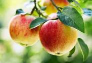

Apple

An apple is an edible fruit produced by an apple tree (Malus domestica).
Apple trees are cultivated worldwide and are the most widely grown species in the genus Malus.
The tree originated in Central Asia.
A raw apple is 86% water and 14% carbohydrates, with negligible content of fat and protein .
A reference serving of a raw apple with skin weighing 100 grams provides 52 calories and a moderate content of
dietary fiber.
Otherwise, there is low content of micronutrients, with the Daily Values of all falling below 10%.
Apples are an important ingredient in many desserts, such as:
- Apple Pie
- Apple Crumble
- Apple Crisp
- Apple Cake